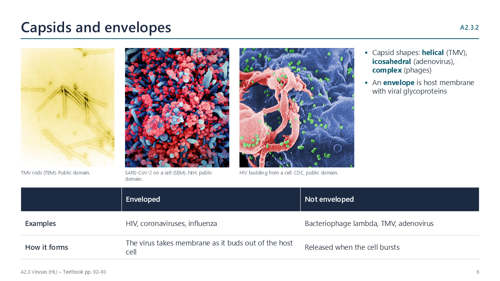
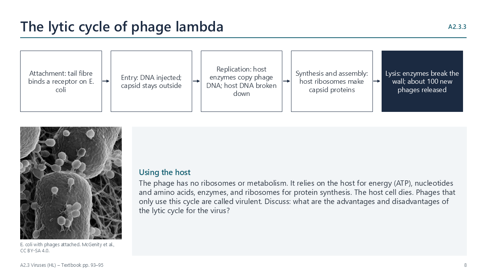

Written for this site from the class slides, with textbook page references for each statement. The chapter is on pages 88–99 of the course textbook. Image credits are on slide 17.
What a virus is
A2.3.1
Features shared by all viruses
pp. 88–90
Viruses are very small, from about 20 to 400 nm, and of a fixed size, because they are assembled from parts rather than growing. Each has DNA or RNA, never both, inside a capsid of protein subunits. They have no cytoplasm, no ribosomes and few or no enzymes, so they can reproduce only inside a host cell, using its enzymes and ribosomes. A virus is not a cell.
A2.3.2
Diversity of viruses
pp. 90–93

Genomes vary: double-stranded DNA in phage lambda, positive-sense single-stranded RNA in coronaviruses, which acts directly as mRNA, and two copies of single-stranded RNA in HIV, a retrovirus whose reverse transcriptase makes DNA from it. Capsids may be helical, icosahedral or complex. Some viruses, such as HIV and coronaviruses, have an envelope of host membrane with viral glycoproteins, taken as they bud out of the cell. The great variety suggests viruses did not all evolve from one ancestor.
Reproduction
A2.3.3
The lytic cycle
pp. 93–95

Phage lambda attaches to a receptor on E. coli and injects its DNA. The host’s enzymes replicate the phage DNA and its ribosomes make capsid proteins, using the host’s ATP, nucleotides and amino acids. New phages assemble, and enzymes break down the cell wall, so the cell bursts (lysis) and releases about a hundred phages.
A2.3.4
The lysogenic cycle
pp. 95–96
Instead of taking over the cell at once, lambda DNA can be inserted into the bacterial chromosome as a prophage. It is copied every time the bacterium divides, and the cell survives. Stress, such as UV light, can cut the prophage out, and the lytic cycle begins. Lysogeny is favoured when bacteria grow poorly, because lysis would then release few phages.
Origins and evolution
A2.3.5
Where viruses came from
pp. 96–98
Three hypotheses compete: progressive (genes that escaped from cells, such as transposons, gained a coat), regressive (cells that became parasites and lost most of their genes) and virus first (self-replicating RNA before cells). No gene is shared by all viruses, so they probably arose several times. Their shared features, such as capsids and small size, are best explained by convergent evolution to a parasitic life. They use the same genetic code as their hosts.
A2.3.6
Rapid evolution: influenza and HIV
pp. 98–99
Viruses have short generation times, huge numbers and, in RNA viruses, no proofreading, so mutations are frequent and selection by immunity or drugs is strong. In influenza, antigenic drift slowly changes the H and N surface antigens, so vaccines are updated each year; antigenic shift, the swapping of whole RNA segments between strains, can produce a new subtype and a pandemic. HIV’s reverse transcriptase makes many errors, so many variants arise in one person; combinations of drugs are used so that resistance is unlikely.
Videos
Select a video to play it here. Select it again to close it.
Print this guide and complete it as you work through the slides and videos. It asks for your own explanations, so close the notes while you try each section.
A printable worksheet covering all six statements, from quick recall to data questions and a longer answer. It has 40 marks and takes about 40 minutes, or you can do one section at a time.